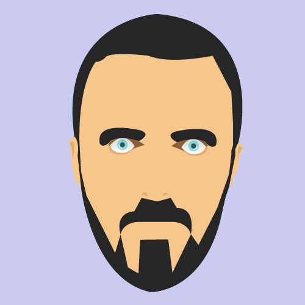

Lieben Pierrick
Poste/mission : Reporter correspondant
Entreprise : Le Parisien/Aujourd’hui en France / RTL
Lieu : Auckland, Nouvelle-Zélande
Contacter l'étudiantPoste/mission : Reporter correspondant
Entreprise : Le Parisien/Aujourd’hui en France / RTL
Lieu : Auckland, Nouvelle-Zélande
Contacter l'étudiantJournalisme.
Privé.
Médias généralistes, le journal Le Parisien/Aujourd’hui en France et la radio RTL couvrent quotidiennement l’actualité nationale et internationale, à travers diverses thématiques (politique, économie, faits divers, sports, culture, etc.).
Du 1er juin au 30 octobre 2011
Rédaction, service des Informations générales
Au cours de cette période, j’étais le correspondant du Parisien et de RTL sur la Nouvelle-Zélande. J’étais plus particulièrement chargé de suivre les préparatifs de la Coupe du monde de rugby, puis le tournoi en lui-même. J’ai donc été chargé de la veille et du traitement de cette actualité, sous la forme d’articles, d’interviews et de reportages écrits et audio. J’ai complété ce travail pour les médias «traditionnels» par l’ouverture d’un blog d’information (http://manallblack.over-blog.com/).
J’avais déjà lancé un premier blog un an auparavant, dans le cadre d’une mission similaire à l’étranger. Il m’apparaissait donc évident et naturel de répéter l’expérience, tout en l’améliorant, dans le cadre de ce nouveau projet en Nouvelle-Zélande. La planification de mon voyage s’est donc accompagnée d’une phase de préparation du blog, avec création d’une identité graphique, rédaction de pages d’informations générales et préparation de supports de communication.
Rendre visible mon travail de journaliste «traditionnel» Créer une plateforme d’information sur la Nouvelle-Zélande et la Coupe du monde, en complétant mes reportages pour la presse par des contenus multimédia Approfondir la démarche éditoriale du précédent blog.
S’occuper seul de tous les aspects du projet (graphiques, techniques et éditoriaux) sans connaissances formelles de certains sujets (webdesign, code, référencement, etc.) Trouver le bon équilibre entre le travail de journaliste et l’activité de bloggeur, notamment pour assurer un rythme de publication régulier sur le web.
Ce projet étant une initiative personnelle, j’ai bénéficié d’une liberté totale dans sa conception et sa réalisation.
Blog d’informations.
Voir la réalisationOui et non.
Comparé au précédent, j’ai, certes, diversifié la nature des contenus proposés sur ce blog (reportages vidéo, newsletter (http://manallblack.over-blog.com/pages/Le_Mechoui_du_Mouton_noir-4405467.html), fil Twitter…). Mais la cadence imposée par cette variété de la production a été difficile à tenir sur la durée et le nombre de visiteurs uniques (quelques dizaines quotidiennement), est resté modeste, avec un niveau globalement inférieur à mon site précédent qui en avait totalisé jusqu’à une centaine par jour.
Peu de retours directs des internautes, hormis de quelques visiteurs réguliers, actifs sur la page Facebook et satisfaits des interactions proposées (concours de pronostics pendant le Mondial notamment !).
Je suis un peu déçu de ne pas avoir réussi à attirer davantage de lecteurs sur le blog, malgré le temps passé sur cette plateforme et mes efforts pour proposer des contenus variés. J’aurais aimé en faire davantage (notamment en termes de reportages vidéo et de newsletters), mais il devenait de plus en plus difficile de mener de front les reportages journalistiques et la production pour le blog. Malgré ces ambitions revues à la baisse, je suis toutefois satisfait d’avoir construit une identité cohérente autour de ce site et d’avoir réussi, malgré tout, à l’actualiser jusqu’à la fin de la Coupe du monde.
La difficulté de rendre visible les contenus d’un blog et d’attirer les visiteurs à eux… Sinon, j’ai surtout appris en faisant! Pour adapter le design du blog et créer l’architecture de mes newsletters notamment, je me suis ainsi frotté au code HTML, ce qui m’a apporté une première approche de la technique, même si elle est restée superficielle.
Ma «stratégie» sur les réseaux sociaux. Pour ce nouveau blog, j’ai notamment recréé une page Facebook dédiée. Autrement dit, je suis reparti de zéro, sans capitaliser sur mon précédent site et son vivier potentiel de visiteurs. La couleur générale du blog. Au pays des All Blacks, j’avais fait le choix délibéré d’une couleur de fond noire, ce qui a rendu le site austère et sombre. Je ferais aussi des captures d’écran de mon blog… Il y a environ un an, Overblog a écrasé sans prévenir toute la mise en page et les éléments graphiques que j’avais réalisés en 2011.
La gestion de contenus et leur valorisation, l’articulation entre un site et ses réseaux sociaux.